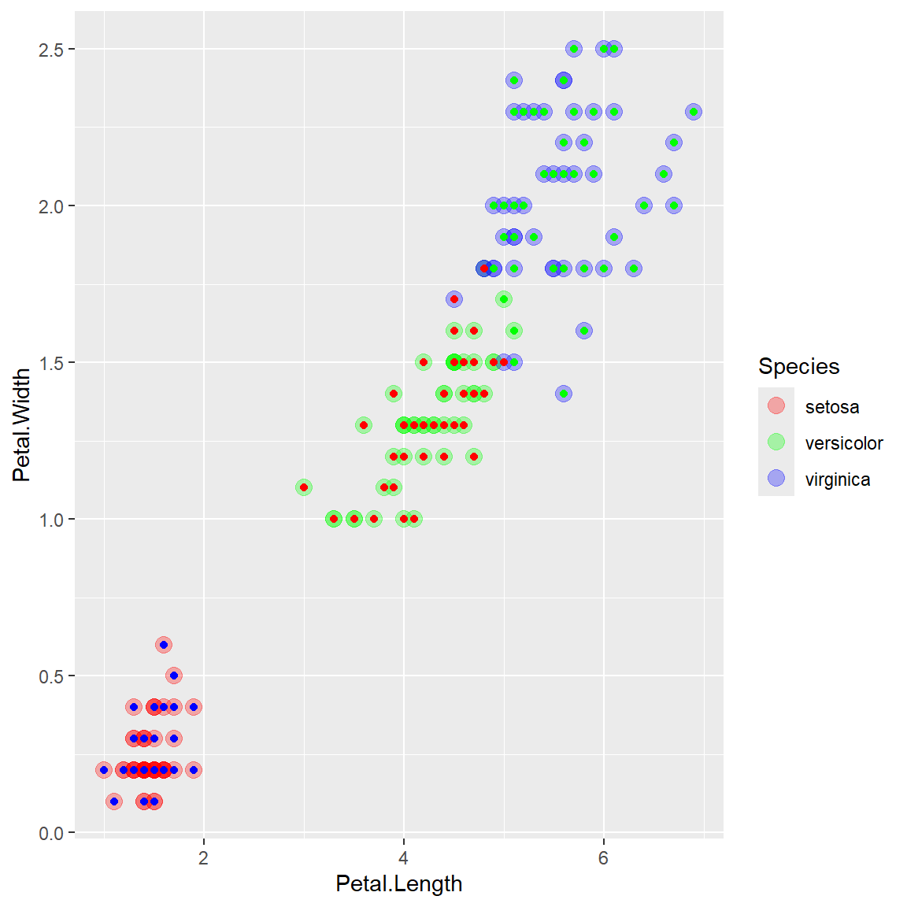

Chapter 5 Mini-batch Stocastic Gradient Descent
Instead of using just one obervation, we could also consider splitting the data into several small “batches” and use one batch of sample to calculate the gradient at each iteration.
# gradient descent function, which also record the path
mylm_sgd_mb <- function(x, y, b0 = rep(0, ncol(x)), delta = 0.5, maxitr = 20)
{
if (!is.matrix(x)) stop("x must be a matrix")
# if (!is.vector(y)) stop("y must be a vector")
if (nrow(x) != length(y)) stop("number of observations different")
# initiate batches with 10 observations each
batch = sample(rep(1:floor(nrow(x)/10), length.out = nrow(x)))
# initialize beta values
b = list()
counter = 1
delta0 = delta
# iterative update
for (k in 1:maxitr)
{
for (i in 1:max(batch)) # loop through batches
{
b[[counter]] = b0
# update based on the gradient of a single subject
b0 = b0 + t(x[batch==i, ]) %*% (y[batch==i] - x[batch==i, ] %*% b0) * delta / sum(batch==i)
counter = counter + 1
# learning rate decay
delta = delta * 0.95
}
}
return(list("allb" = b, "beta" = b0))
}
# fit the model
mybeta = mylm_sgd_mb(X, y, b0 = c(0, 1), maxitr = 3)
# mybeta
allb = matrix(unlist(mybeta$allb), 2, length(mybeta$allb))
contour(beta1, beta2, rss, levels = quantile(rss, quanlvl))
points(allb[1,], allb[2,], type = "l", col = "red", pch = 2)
points(b[1], b[2], pch = 19, col = "blue", cex = 2)
box()